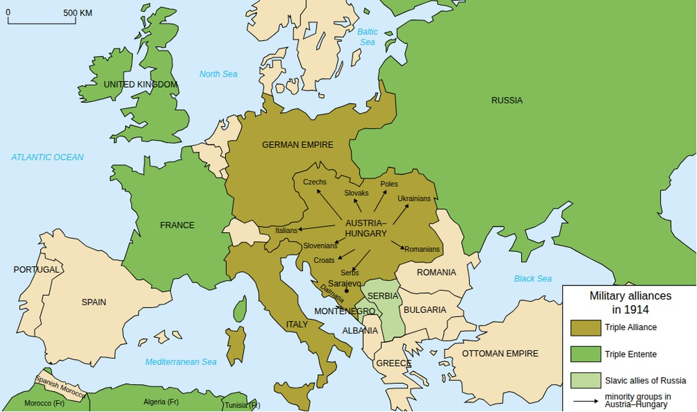

7.2 Causes of World War I
- LO-A: MAIN: the four underlying causes: Militarism (arms race, especially Germany vs. Britain in naval buildup), Alliances (Triple Alliance vs. Triple Entente turned a regional conflict into a world war), Imperialism (colonial competition created tensions and rivalries), Nationalism (especially in the Balkans, where Slavic nationalism threatened Austria-Hungary). These were the deep causes that made the powder keg; the assassination was the spark. The spark: Sarajevo, June 28, 1914: Archduke Franz Ferdinand, heir to the Austro-Hungarian throne, was assassinated by Gavrilo Princip, a Bosnian Serb nationalist, in Sarajevo. Austria-Hungary blamed Serbia and issued an ultimatum; Serbia refused key terms; Austria-Hungary declared war. The alliance system then dragged in Germany, Russia, France, and Britain within five weeks. A regional Balkan dispute became WWI. The alliance system was the mechanism of escalation: The alliance system didn't cause the war, but it ensured a regional conflict would become a world war. When Austria-Hungary declared war on Serbia, Russia mobilized (to protect Serbia). Germany declared war on Russia, then France (Russia's ally). Germany invaded Belgium; Britain declared war on Germany. The interlocking alliances converted a bilateral dispute into a continental war in about five weeks. Imperialist competition: the deeper root: The CED explicitly links imperialist expansion and competition for resources to WWI's causes. European powers had spent decades competing for colonies, resources, and markets; this competition created tensions, arms races, and strategic rivalries that made diplomacy fragile. The war was partly a product of imperial competition boiling over after decades of managed tension.
Try each question before revealing the answer.
1. Historians distinguish between the "long-term causes" and the "immediate trigger" of WWI. Why is this distinction important for understanding the war?
2. The alliance system that existed in 1914 was supposed to preserve peace through deterrence, the idea that any aggressor would face multiple enemies simultaneously. Why did deterrence fail?
3. The AP CED identifies "imperialist expansion and competition for resources" as a cause of WWI. How does imperial competition connect to a war fought mostly in Europe?
4. Why was nationalism in the Balkans particularly dangerous for the existing European order in 1914?
5. Some historians argue WWI was "inevitable" given the alliance system and imperial tensions; others argue it was a tragic accident produced by miscalculations in summer 1914. Which view is more convincing?
- Explain the causes and consequences of World War I, including imperialist competition for resources, territorial and regional conflicts, the alliance system, and intense nationalism
Tap a term for its definition.
-
Definition: The glorification of military power and the belief that a strong military is the primary guarantor of national security and prestige. Significance: The Anglo-German naval arms race and the general European military buildup created a culture in which war was seen as a legitimate and even noble solution to political disputes.
-
Definition: A network of mutual defense treaties obligating nations to support each other if attacked. In 1914: Triple Alliance (Germany, Austria-Hungary, Italy) vs. Triple Entente (France, Russia, Britain). Significance: Converted a regional Austro-Serbian dispute into a continental war in five weeks by automatically pulling in allied powers.
-
Definition: Military alliance between Germany, Austria-Hungary, and Italy (1882). Significance: Germany and Austria-Hungary were the Central Powers in WWI; Italy, citing defensive alliance terms, initially stayed neutral.
-
Definition: Military alliance between France, Russia, and Britain (formalized by 1907). Significance: The core of the Allied Powers in WWI; the Entente's commitments meant any war involving Russia or France would likely involve all three.
-
Definition: The killing of Archduke Franz Ferdinand (heir to Austria-Hungary) by Gavrilo Princip in Sarajevo, June 28, 1914. Significance: The immediate trigger of WWI; set off the "July Crisis" in which Austria-Hungary's ultimatum to Serbia activated the alliance system.
-
Definition: Germany's military strategy for a two-front war: quickly defeat France in the west, then shift forces to fight Russia in the east. Significance: Required Germany to invade France through Belgium, which brought Britain into the war (Britain had guaranteed Belgian neutrality); built in a military logic that left little room for diplomacy once mobilization began.
-
Definition: The movement for political unity of Slavic peoples, promoted especially by Russia, which positioned itself as protector of Slavic nations. Significance: Drove Russia's commitment to support Serbia against Austria-Hungary; made backing down from Serbia's defense politically impossible for the tsar.
-
Definition: The five weeks of diplomatic escalation between Franz Ferdinand's assassination (June 28) and Britain's declaration of war on Germany (August 4, 1914). Significance: The specific sequence of decisions. Austria-Hungary's ultimatum, Serbia's partial refusal, Russian mobilization, German declarations of war, Belgian invasion, that converted a regional crisis into world war.
🌍 A Continent Armed and Angry: Europe in 1914
By 1914, Europe was a powder keg. Decades of industrialization had produced military technology of unprecedented destructive power. Imperial competition had created tensions among the great powers over colonies, markets, and strategic position. The alliance system had divided Europe into two armed camps. And nationalism, the intense belief that ethnic groups deserved their own states and that national honor must be defended, had raised the emotional stakes of every diplomatic dispute.
Historians use the acronym MAIN to organize the four underlying causes of World War I: Militarism, Alliances, Imperialism, and Nationalism. The AP CED specifically requires you to know all four. These were the structural conditions that made a small spark catastrophic, the "long fuse" that turned a political assassination into the deadliest war in human history up to that point.
⚔️ Militarism: Arms Races and War Culture
Militarism refers to two related phenomena: the buildup of military forces and the cultural glorification of military power. By 1914, European great powers were spending unprecedented fractions of their national income on armies and navies. Germany's army had doubled in size since 1870. Britain and Germany were locked in a naval arms race. France, after its humiliating defeat in the Franco-Prussian War (1871), had rebuilt its army with revenge against Germany as an explicit goal.
The culture of militarism was equally important. Military officers held high social prestige across Europe. War was widely seen, at least until the slaughter of the trenches proved otherwise, as noble, glorious, and a test of national character. This cultural glorification of military power meant that when crisis came, military solutions were seriously considered rather than dismissed. The arms buildup also created a "use it or lose it" strategic logic: military plans were designed around rapid mobilization, and once mobilization began, it was technically difficult to reverse without leaving the mobilizing state vulnerable.
🤝 Alliances: The Mechanism of Escalation
The alliance system was supposed to preserve peace through deterrence: any power that attacked another would face a coalition response. Instead, the alliances converted a regional dispute into a world war. By 1914, Europe was divided into two armed blocs:
- Triple Alliance: Germany, Austria-Hungary, and Italy (Italy stayed neutral in 1914, then switched sides in 1915)
- Triple Entente: France, Russia, and Britain
When the assassination of Franz Ferdinand triggered an Austro-Serbian dispute, the alliances activated like dominoes. Austria-Hungary declared war on Serbia → Russia mobilized to defend Serbia → Germany declared war on Russia → Germany declared war on France (Russia's ally) → Germany invaded Belgium to attack France → Britain declared war on Germany (Britain had guaranteed Belgian neutrality in 1839). A bilateral dispute became a continental war in five weeks.
🌐 Imperialism: Competition That Created Tension
The AP CED explicitly identifies "imperialist expansion and competition for resources" as a cause of WWI. By 1914, European nations had spent decades competing for colonies across Africa, Asia, and the Pacific. This competition created tensions in two ways.
First, direct colonial disputes: the Moroccan Crises (1905 and 1911) brought France and Germany to the brink of war over who would control Morocco. Germany backed down both times, humiliated, feeding a desire for future confrontation. Second, imperial logic shaped military planning: Britain's global empire required a large navy; Germany wanted a larger navy to compete for global influence; the resulting Anglo-German naval arms race was itself a product of imperial ambition. The Balkans crisis that triggered WWI was also connected to imperialism: Austria-Hungary and Russia were competing for influence in the Balkans as Ottoman power retreated, a classic imperial competition over a weakening power's territory.
🔥 Nationalism: The Fuel That Made Everything Worse
Nationalism, intense pride in one's nation and the belief that national honor must be defended, was the emotional fuel that made the underlying tensions explosive. Nationalism operated on two levels in 1914:
Great-power nationalism made backing down from any confrontation feel like national humiliation. Germany had backed down in the Moroccan Crises; Austria-Hungary had backed down when Russia supported Serbia in earlier Balkan disputes. Nationalist opinion in both countries demanded that the humiliations stop. In 1914, with Germany's "blank check" of unconditional support, Austria-Hungary decided it would not back down again, even at the risk of war.
Slavic nationalism in the Balkans was the most immediate danger. The Balkans had been the site of two wars (1912–13) as Slavic nations broke free from Ottoman rule. Now Pan-Slavism, the movement for South Slavic unity, threatened Austria-Hungary's own multi-ethnic empire, which contained millions of Slavic subjects. Serbia's growing power and nationalist ambition appeared to Austria-Hungary as an existential threat. The assassination of Franz Ferdinand by a Bosnian Serb nationalist confirmed their worst fears.

Europe in 1914 was divided into two armed alliance blocs. The Triple Alliance (Germany, Austria-Hungary) faced the Triple Entente (France, Russia, Britain). When war began, the Ottoman Empire joined the Central Powers; Italy eventually joined the Allies. AI-generated illustration (Google Gemini, 2025), commercially licensed.
💥 The Spark: Sarajevo, June 28, 1914
On June 28, 1914, Archduke Franz Ferdinand, heir to the Austro-Hungarian throne, was visiting Sarajevo, the capital of Bosnia (a region Austria-Hungary had annexed in 1908, to Serbian outrage). A group of young Bosnian Serb nationalists, members of a secret society called the "Black Hand," had planned to assassinate him. The first attempt failed, a bomb bounced off the archduke's car. But as the motorcade changed routes, the car stalled directly in front of 19-year-old Gavrilo Princip, one of the conspirators. He fired two shots, killing both Franz Ferdinand and his wife Sophie.
Austria-Hungary blamed the Serbian government (incorrectly. Serbia's government hadn't planned the attack, though some Serbian military officers were involved) and issued an ultimatum so harsh it was designed to be rejected. Serbia accepted almost all the terms but balked at one: allowing Austrian officials to conduct investigations on Serbian soil, a direct violation of Serbian sovereignty. Austria-Hungary declared war. The July Crisis had begun.
These videos will help you review Causes of World War I and solidify key concepts before your exam.
- The civilizing mission
- The role of technology in escalating violence
- Social Darwinism as a cause of conflict
- Unintended consequences of political institutions
- France's alliance with Russia was motivated by fear of German industrial power
- The Moroccan Crises (1905, 1911) brought France and Germany close to war over colonial control
- Austria-Hungary's ultimatum to Serbia was rejected because of Serbian nationalism
- Gavrilo Princip was a member of the Black Hand, a Serbian nationalist secret society
- Franz Ferdinand was personally beloved by all European monarchs, who felt obligated to respond
- The assassination occurred in Berlin, the political center of the German alliance system
- The interlocking alliance system meant that an Austro-Serbian war activated commitments involving Russia, Germany, France, and Britain
- Serbia's military strength made it impossible for Austria-Hungary to respond without German and Ottoman support
- Austria-Hungary was itself a multi-ethnic empire containing millions of Slavic subjects who might demand independence
- Russia's Pan-Slavic policy threatened to draw France and Britain directly into Balkan disputes
- Slavic nations had already seized Austria's most industrialized territories in the Austro-Prussian War
- The Ottoman Empire was funding Slavic nationalist movements to undermine Austrian power
- Belgium had signed a mutual defense treaty with France and Russia requiring them to enter the war
- Britain had guaranteed Belgian neutrality, so Germany's invasion of Belgium brought Britain into the war
- Belgium's industrial heartland was essential to Germany's ability to sustain a long war against France
- The Schlieffen Plan required German forces to pass through France before turning to fight Russia